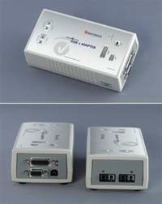
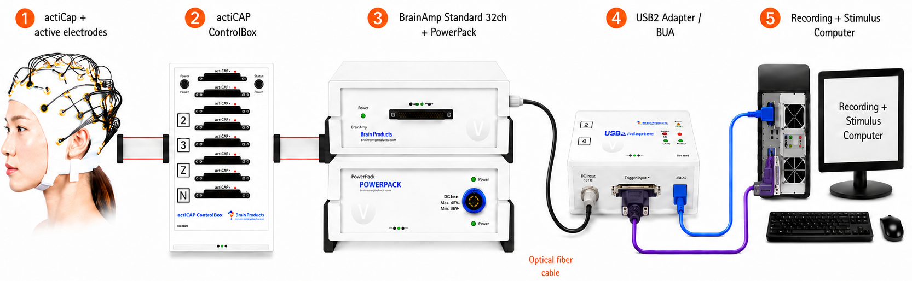

BrainAmp Setup¶
What this page covers
This page summarizes the core hardware used in the CogSys BrainAmp recording setup, how the devices are connected, and how to run a short connection test before every recording session.
1. Hardware list¶
Visual hardware guide¶

BrainAmp Standard 32ch + PowerPack
BrainAmp Standard 32ch is the main EEG amplifier. It receives the EEG signal, amplifies it, digitizes it, and sends the 32-channel recording stream to the acquisition chain.
PowerPack supplies battery power to the amplifier system. Using battery power helps reduce mains-related line noise and keeps the recording chain electrically cleaner and more stable.
Practical note: check the PowerPack charge before every session.

actiCAP ControlBox
The ControlBox is the interface between the active cap system and the amplifier chain. It connects the actiCap to the BrainAmp hardware and enables actiCAP impedance measurement.
Practical note: if impedance check is unavailable, this is one of the first devices to inspect.
32-channel actiCap + active electrodes
This is the participant-facing EEG cap and electrode set. Each active electrode contains local electronics (a small active circuit / chip) that help buffer the signal close to the scalp and support reliable impedance checking.
Practical note: electrode contact quality here directly determines signal quality.

USB2 Adapter (BUA)
The USB2 Adapter is the USB interface between the BrainAmp hardware and the recording computer. It transfers recorded EEG data to BrainVision Recorder and also supports trigger / event signal integration into the recording workflow.
Practical note: for timing-sensitive experiments, use a separate stimulus computer and recording computer whenever possible.
Quick role summary¶
| Hardware | Main role | Key thing to remember |
|---|---|---|
| PowerPack | Battery-based power supply for the BrainAmp system | Helps reduce line-noise contamination; charge it before recording |
| BrainAmp Standard 32ch | Main 32-channel EEG amplifier | Acquires, amplifies, and digitizes EEG signals |
| USB2 Adapter (BUA) | USB interface between hardware and recording computer | Carries the acquisition connection and supports trigger integration |
| actiCAP ControlBox | Interface between the cap and amplifier chain | Required for actiCAP impedance measurement |
| 32-channel actiCap + active electrodes | Participant-side active EEG cap system | Electrode contact and impedance quality are critical |
Recommended computer arrangement¶
One-computer vs two-computer setup
- Preferred for timing-sensitive or complex experiments: use a stimulus presentation computer and a separate recording computer.
- Acceptable for simple experiments: the trigger source and the BUA USB connection can both be connected to the same computer.
2. Hardware connection¶
Connection logic¶
Signal chain
Participant → actiCap + active electrodes → actiCAP ControlBox → BrainAmp Standard 32ch → PowerPack → USB2 Adapter (BUA) → Recording computer (BrainVision Recorder)
Trigger chain
Stimulus computer → trigger / event signal → BUA / Recorder workflow
One-computer connection figure¶

The figure above shows the compact one-computer configuration. In this setup, the same workstation is used for both stimulus presentation and BrainVision Recorder. The actiCap connects to the actiCAP ControlBox through the electrode ribbon cable, the ControlBox connects to the BrainAmp Standard 32ch through the wide ribbon cable, and the BrainAmp connects to the USB2 Adapter (BUA) through the optical fiber cable. The BUA then connects to the computer using two separate cables: the purple trigger / parallel-port cable and the blue USB cable.
3. Hardware connection test¶
When should this test be run?
Run a short connection test before every recording session, and again whenever the hardware has been re-cabled or the Recorder workspace has changed.
Power and detection
- PowerPack is charged.
- The amplifier chain powers on normally.
- BrainVision Recorder detects the hardware.
- The expected workspace opens correctly.
EEG and impedance
- The expected 32 EEG channels are visible.
- actiCAP impedance measurement works through the ControlBox.
- Live EEG is plausible, not flat, saturated, or obviously disconnected.
- Touching one electrode causes a local, sensible change.
Triggers and recording
- Send one or more test triggers.
- Confirm that triggers appear correctly in Recorder.
- Record a short test file.
- Reopen the file if needed and verify that EEG and triggers were saved correctly.
Simple pass criteria¶
A basic connection test is successful when:
- the hardware powers on normally;
- BrainVision Recorder recognizes the intended setup;
- impedance checking is available;
- the live EEG looks plausible;
- test triggers appear correctly;
- and a short recording can be saved without errors.
4. Common connection problems¶
| Problem | Possible cause | First thing to check |
|---|---|---|
| Amplifier not detected | USB / interface path problem | Check the BUA USB connection and device power state |
| Impedance check not available | ControlBox / cap connection issue | Check the ControlBox connection and cap interface |
| Flat or missing channels | Electrode or cap-side connection problem | Check electrode contact, cap connection, and channel seating |
| Triggers do not appear | Trigger path not connected correctly | Check the trigger cable, trigger source, and Recorder configuration |
| Unstable or noisy data | Power, grounding, or poor electrode contact | Check PowerPack status, electrode preparation, and cable stability |
5. Minimum pre-recording note¶
Before starting a real session, document at least the following:
- hardware configuration used;
- whether one or two computers were used;
- workspace / montage name;
- any unusual cable or power situation;
- and whether the connection test passed.